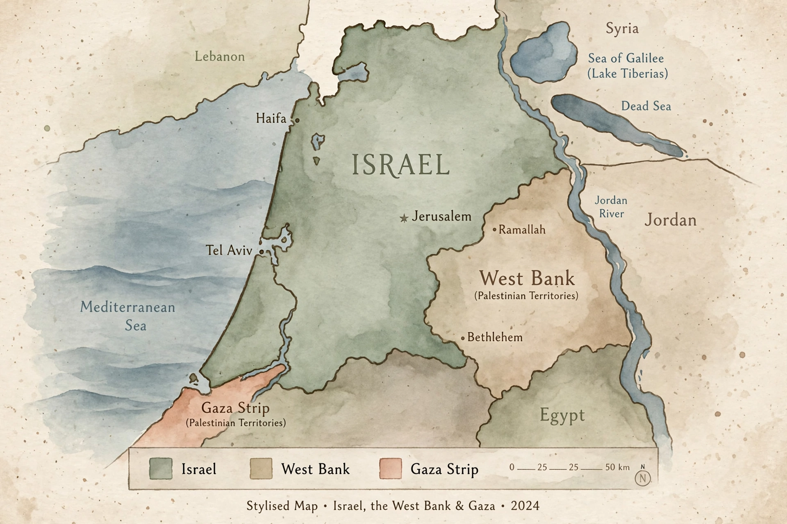

One-state solution

The one-state solution is a proposed approach to resolving the Israeli–Palestinian conflict, according to which Israel, the West Bank and the Gaza Strip would be merged into a single state. Variants range from a unitary secular democratic state with equal citizenship for all inhabitants, to a binational federation, to proposals in which the single state would retain a Jewish character.
Background
The alternative most widely endorsed by the international community since the 1990s has been the two-state solution, envisaging an independent Palestine alongside Israel. Support for a single state increased during the 2000s and 2010s as the peace process stalled, settlement expansion continued, and commentators argued that the territorial basis for two states was eroding.
Arguments
Advocates of a unitary democratic model argue it would guarantee equal rights, end military occupation of the Palestinian territories, and resolve issues such as settlements, Jerusalem and the Palestinian right of return within one political framework. Critics respond that most Israelis and Palestinians prefer national self-determination in separate states, that a single state would end Israel's character as a Jewish state, and that binational arrangements in deeply divided societies have a poor historical record.
History
Before 1948, some Zionist and Palestinian figures — including members of Brit Shalom and, later, the Palestine Liberation Organization in its early charters — advocated forms of a single state in Mandatory Palestine. The idea re-entered mainstream debate through academic and journalistic writing in the late 1990s and 2000s.